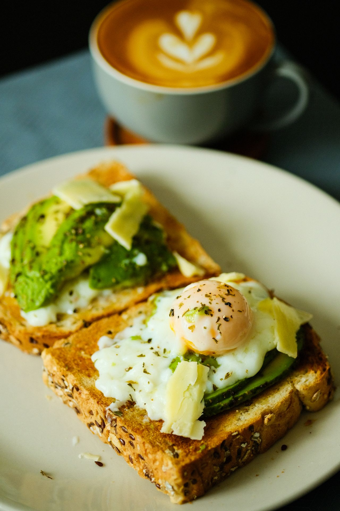
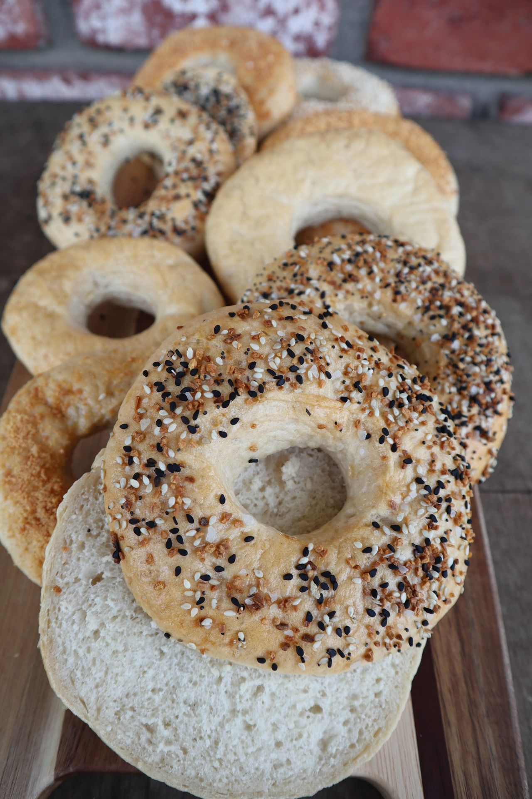
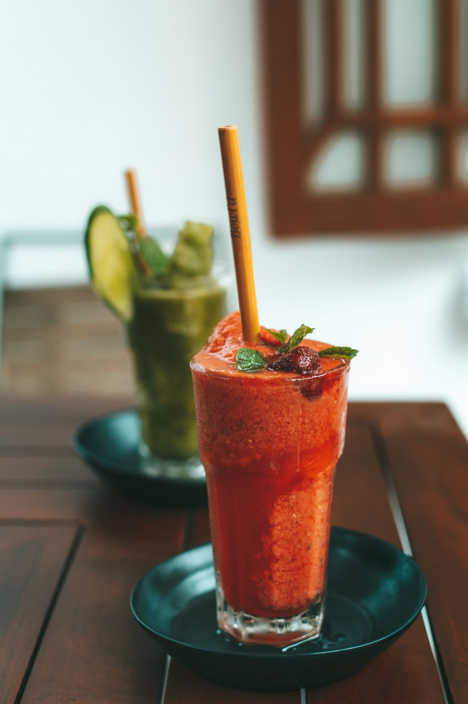
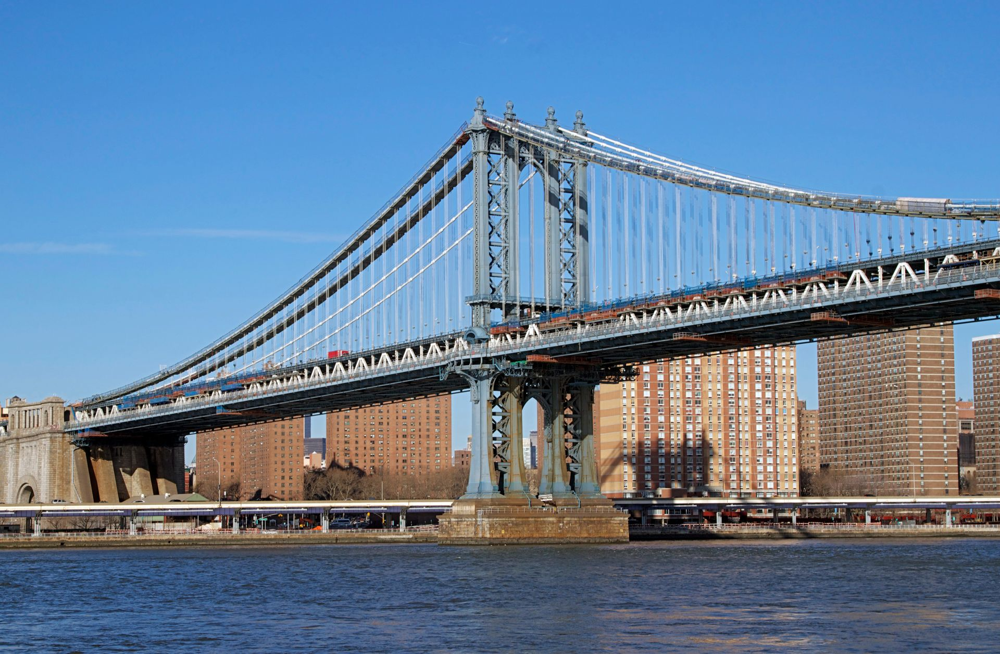
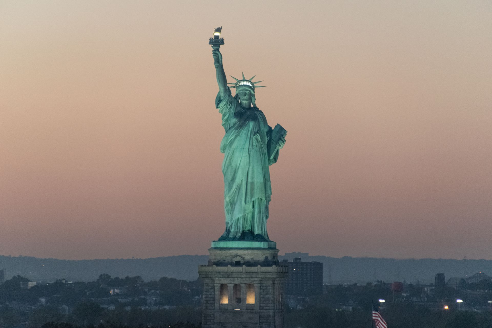
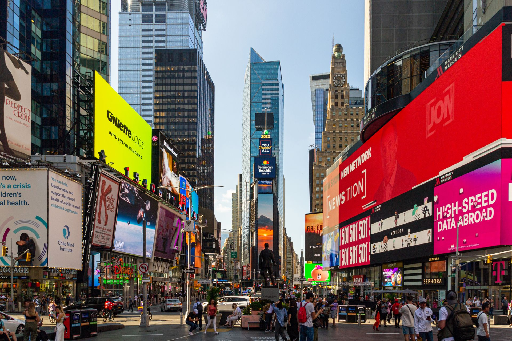
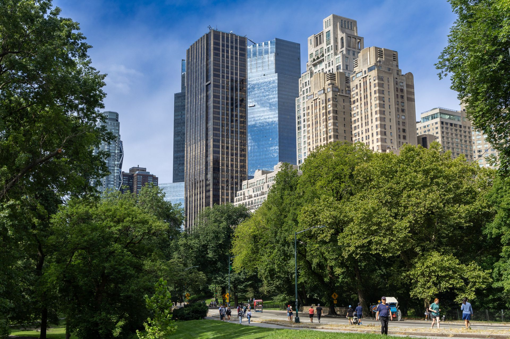

Start your day in the heart of New York City with a delicious breakfast, explore one of the city's most famous landmarks, and finish your day with an exciting evening activity. Choose your favorite options below to create your perfect New York adventure. Whether you are visiting for the first time or returning to discover something new, there is always something exciting waiting around the corner.
Before exploring the city, start your morning with a classic New York breakfast. Choose something quick and delicious to give you plenty of energy for a full day of sightseeing.

Creamy avocado spread over crisp toast makes a simple and refreshing way to start your morning. Add an egg or a sprinkle of seasoning for an extra boost before heading out to explore the city.

A classic New York bagel is a must-have breakfast. Choose a fresh bagel with cream cheese, lox, or another favorite topping for a quick meal before a busy day of sightseeing.

A cold fruit smoothie is a light and refreshing option for a morning in the city. Blend your favorite fruits together for an easy breakfast you can enjoy while getting ready for the day.
Now that you've had breakfast, it is time to explore one of New York City's most famous sights. From historic landmarks to bustling streets and peaceful green spaces, choose an attraction that matches your perfect day.




After spending the day exploring New York, it is time to enjoy the city's famous arts and entertainment scene. Select One Museum to Visit and One Show to See
Please fill out all of the required sections.
Breakfast:
Tourist Attraction:
Museum:
Show: